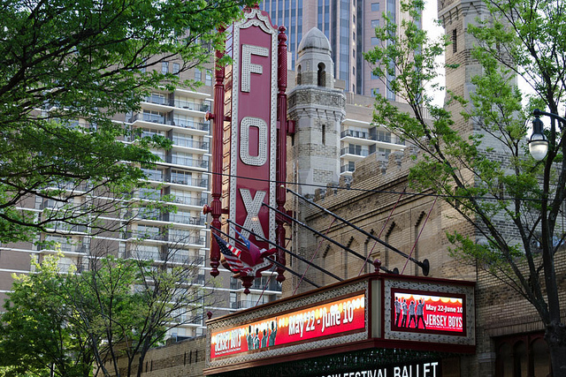

Arts & Culture
From unique neighborhood galleries such the innovative Museum of Design Atlanta (MODA) to our Grammy Award-winning Atlanta Symphony Orchestra, Atlanta's arts scene is waiting to be discovered. While visiting, check out some of the nation's most extraordinary exhibits, museums and theaters. And prepare to experience Atlanta's diverse art and culture!